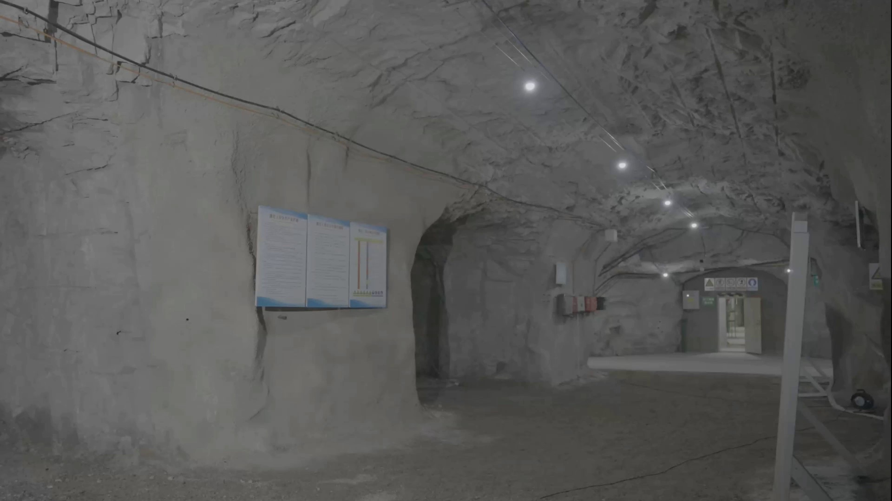
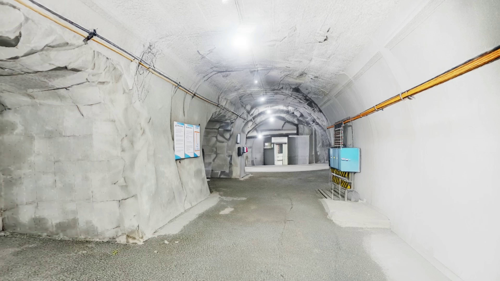
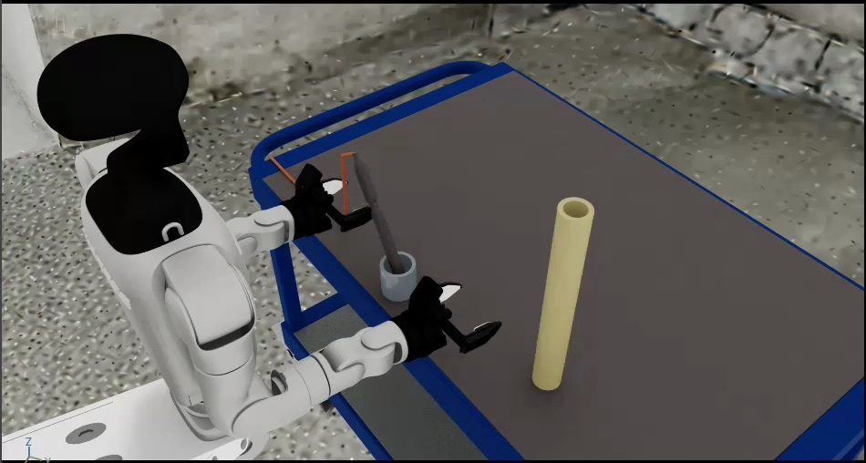
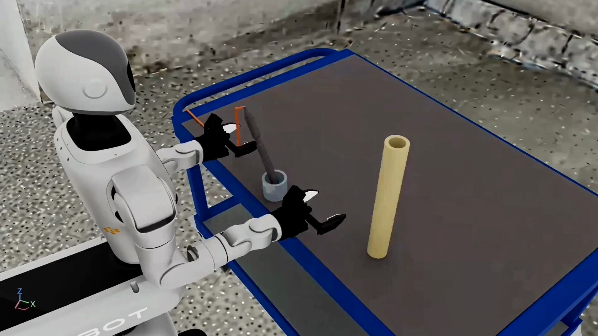
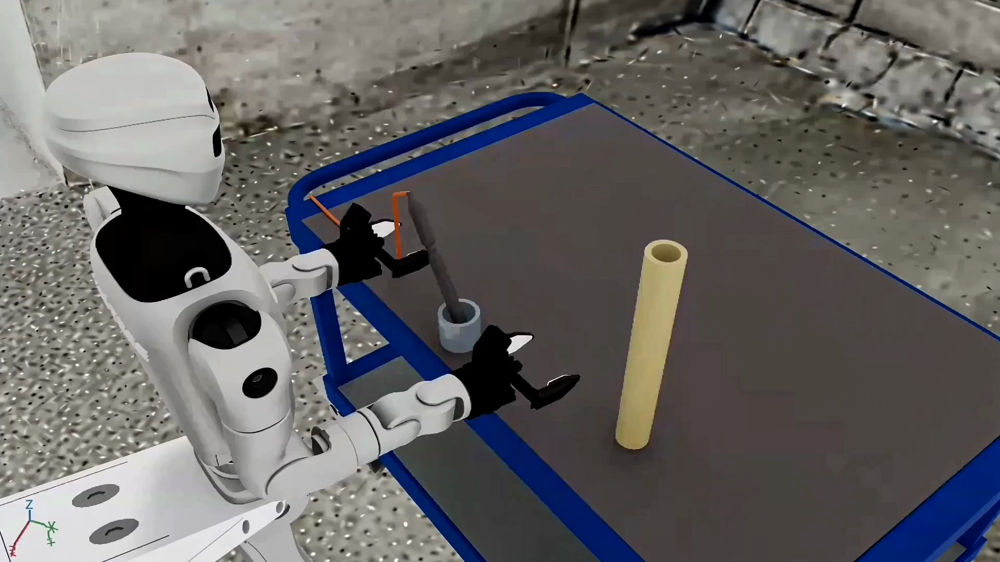
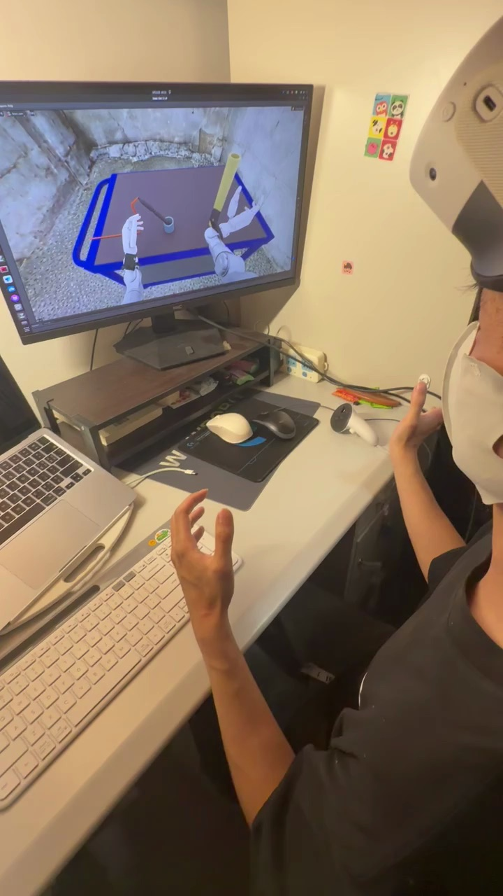
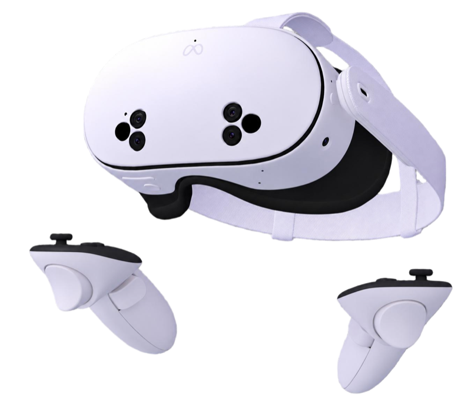
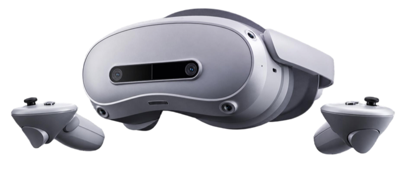
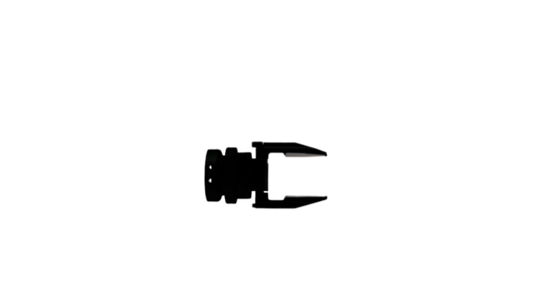
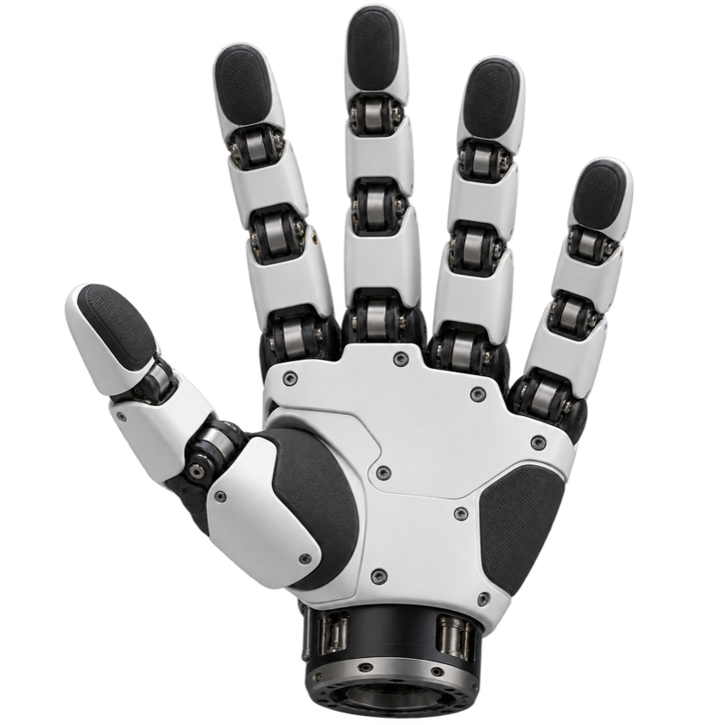

01
Primer Assembly
Insert an inert mock detonator into a mock explosive cartridge.
ICRA 2027 Submission
Interactive mining scenes, functional assets, six manipulation tasks, and controlled underground conditions for reproducible robot learning and evaluation.
Overview
Robotic manipulation in underground mines requires handling specialized equipment, task-specific physical interactions, and challenging environmental conditions that are not explicitly targeted by general-purpose manipulation benchmarks.
We introduce RMiner, an interactive simulation benchmark designed for dexterous robotic manipulation in underground mining. Built from real mining-site observations, RMiner provides underground scenes, interactive mining assets, six manipulation tasks, multiple robot embodiments, and configurable persistent environmental conditions and sudden events.
To support scalable benchmark construction, we further develop a task-guided workflow for automated mining asset generation, structural validation, physical configuration, and repair. Experiments show that additional post training on the evaluated general domain tasks does not improve performance on the mining tasks, while mining-specific environmental conditions remain challenging for the evaluated policies. A physical robot case study further indicates that RMiner simulation data can improve policy performance on a real robot.
Mining Task Suite
The task suite spans object transfer, constrained insertion, sustained contact, rotation, precise alignment, and installation.
Insert an inert mock detonator into a mock explosive cartridge.
Maintain contact with a mining cart and push it into the target area.
Grasp and rotate a mining valve until it reaches the target state.
Insert the assembled mock primer into the target blasthole.
Align a nut with the end of a rock bolt and complete the installation.
Retrieve a mining cutter pick and place it in the collection box.
Benchmark Construction
Task descriptions guide functional geometry, physical authoring, validation, and repair before assets enter the benchmark.
01
The agent derives interaction requirements from each task, generates candidate 3D assets, and checks functional structures before configuring physical properties in Isaac Sim.
02
Observations collected at real mining sites become textured visual meshes and simplified collision meshes. Shared transforms preserve scale and alignment before the scene enters Isaac Sim.
Static checks cover metric scale, transform consistency, and collision API configuration.


Underground Conditions
RMiner separates sustained visibility changes from events that disrupt manipulation during task execution.
Dust and sudden dust bursts use the same local volumetric representation. Emission timing and intensity distinguish sustained dust from an abrupt loss of visibility.
Robots and Teleoperation
The same benchmark tasks support three robot embodiments, grippers or dexterous hands, and immersive teleoperation interfaces.




Demonstration Collection
Quest and PICO headsets support demonstration collection across gripper and dexterous-hand configurations.

Quest
PICO
Gripper
Dexterous handExperiments
Success rates are reported under the evaluation settings described in the paper.
General-domain post training did not improve mining-task performance under the evaluated protocol.
Asset usability
Average construction time
Physical Robot Case Study
A preliminary physical-robot study compares training from 20 real demonstrations with joint training from the same real data and 300 RMiner simulation demonstrations.
Adding RMiner demonstrations produced higher observed success rates in this limited case study. The result is preliminary and does not constitute a comprehensive physical-robot evaluation.
Resources